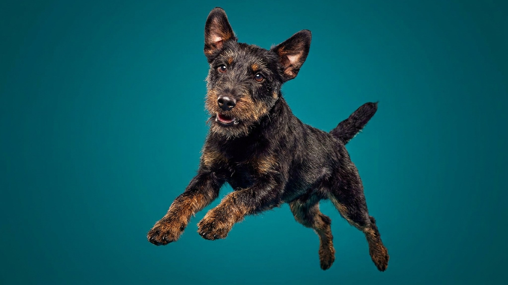

Компактный, гладкий, размером почти с кошку — и с мотором рабочей норной собаки внутри. Немецкого ягдтерьера выводили не для дивана, а чтобы в одиночку идти в нору на лису и барсука, и этот драйв никуда не делся в городе. Ниже — сколько нагрузки ему нужно на самом деле, откуда берётся упрямство и кому такая собака подойдёт, а кому точно нет.
🐾 Ваш питомец — ягдтерьер?
Заведите профиль в AnimaLife: приложение запомнит породу, возраст и вес и будет подсказывать по уходу именно для неё. Вопросы AI-ветеринару — круглосуточно и бесплатно.
Завести профиль → Завести в MAX →
У вас iPhone? AnimaLife есть в App Store
Ягдтерьер — молодая немецкая порода первой половины XX века, созданная охотниками ради одного: универсальной норной и охотничьей собаки без «выставочного» балласта. Отсюда всё остальное — смелость на грани безрассудства, страсть к преследованию и полная самостоятельность в работе.
Понять это важно ещё до покупки: рабочая психика не отключается от того, что собака живёт в квартире. Инстинкт ищет выход, и если хозяин его не даёт — ягд найдёт применение сам, обычно не в вашу пользу.
Две короткие прогулки «по нужде» такой собаке не хватит категорически. Ягдтерьеру нужна и физическая, и умственная нагрузка каждый день.
Недогруженный ягд грызёт, копает, лает и убегает. Это не «плохой характер», а сигнал: собаке мало занятости.
Ягдтерьер умён, привязан к своему человеку и очень вынослив. Но он же независим и решителен — и на охотничьем азарте способен просто «выключить» команды.
🐾 У вас ягдтерьер?
AnimaLife соберёт уход под породу: к каким болезням есть склонность, что проверять по возрасту, чем кормить и когда пора к врачу. Бесплатно, прямо в мессенджере.
Собрать план ухода → Собрать в MAX →
У вас iPhone? AnimaLife есть в App Store
🐾 Понравился разбор?
Подпишитесь на канал — каждый день разбираем по одному тревожному симптому у кошек и собак: что в пределах нормы, а когда пора к врачу. Подпишитесь, чтобы не пропустить разбор, который может спасти здоровье вашего питомца.
В уходе порода нетребовательна: шерсть бывает гладкой и жёсткой, обе линяют умеренно, достаточно регулярного вычёсывания, а жёсткошёрстным — периодического тримминга. Крепкое здоровье при активном образе жизни — норма, но плановые осмотры у ветеринара и контроль веса никто не отменял.
Ягдтерьер подойдёт активному человеку, готовому вкладывать время в занятия, спорт или охоту, и любящему думающую, но своенравную собаку. Он плохо подойдёт тем, кто ищет спокойного компаньона на диван, много работает вне дома или заводит первую собаку без опыта. Порода честная — она просто требует нагрузки, ради которой её и создавали.
Материал носит информационный характер и не заменяет очную консультацию ветеринара.